Five moves: SMILES → graph → fingerprint, Tanimoto for similarity search, Vina for docking, Lipinski + QED + ML for ADMET, GNNs + generative DL for design.
Learning objectives
- Represent small molecules as SMILES, InChI, and molecular graphs; convert between formats; compute basic descriptors with RDKit.
- Compute molecular fingerprints (Morgan / ECFP, MACCS, atom-pair) and use Tanimoto similarity for compound clustering and library deduplication.
- Run a basic virtual screen: from receptor structure → docking pose generation (AutoDock Vina) → scoring → enrichment analysis.
- Apply ADMET property predictions (Lipinski's Rule of 5, QED, BBB permeability, hepatotoxicity); recognise QSAR limits.
- Describe modern deep-learning approaches: GNNs for molecular property prediction (Chemprop), generative models for de novo design (REINVENT, MolDiff), AlphaFold-driven structure-based design.
- Trace a drug discovery program from target ID through hit-to-lead, lead optimisation, IND-enabling studies, and clinical development.
- Frame drug discovery in EE terms: chemical space as a high-dimensional discrete optimisation problem; fingerprints as feature vectors; docking as a constrained-optimisation problem on a binding-energy landscape.
Part 1 · 25 min Drug Discovery Landscape
1.1 What's a drug
A drug is a chemical entity that:
- Binds a specific protein (or other macromolecule) target.
- Modulates the target's activity in a clinically useful way.
- Has acceptable safety profile, pharmacokinetics, and route of administration.
Most drugs are small molecules (< 900 Da; e.g., aspirin, statins, kinase inhibitors). A growing fraction are biologics (antibodies, peptides, proteins, oligonucleotides). This lecture focuses on small molecules.
1.2 The drug discovery timeline
Typical pipeline (10-15 years from start to FDA approval):
- Target identification (~1 year): genetic + functional + clinical evidence pinpoint a druggable target.
- Hit discovery (~2 years): high-throughput screening, virtual screening, structure-based design → 100s-1000s of "hits" (compounds with sub-μM activity).
- Hit-to-lead (~1-2 years): triage hits for druggability; optimise to leads (~10s of lead candidates).
- Lead optimisation (~2-3 years): medicinal chemistry on leads to improve potency, selectivity, ADMET. Output: 1-3 "development candidates".
- Pre-clinical (~1-2 years): pharmacokinetics, toxicology, animal efficacy.
- Clinical trials (~5-7 years): Phase 1 (safety), Phase 2 (efficacy), Phase 3 (large-scale efficacy + safety).
- FDA review (~1 year).
Cost: ~$1-3 billion per approved drug. Attrition: ~10% of clinical candidates make it to approval.
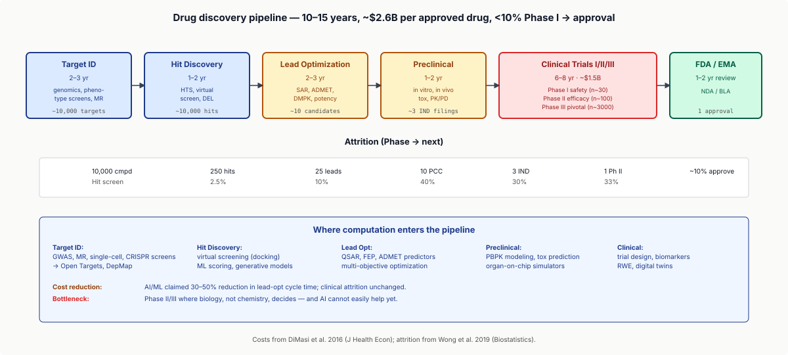
1.3 Where genomics fits
Modern drug discovery is informed by genomics at every step:
- Target ID: GWAS, CRISPR screens, DepMap, Mendelian randomisation.
- Mechanism: pathway analysis, structural biology.
- Patient stratification: clinical genomics, pharmacogenomics.
- Biomarker development: RNA-seq, single-cell, cancer genomics.
This lecture focuses on the chemistry side — how computational approaches manipulate molecules and screen against targets.
1.4 Druggability
Druggability: can a target be modulated by a small-molecule drug?
- Druggable targets: enzymes (especially kinases, GPCRs), receptors, ion channels. ~3,000 of ~20,000 human proteins.
- Undruggable: transcription factors, scaffolds, intrinsically-disordered proteins. Recent advances (PROTACs, molecular glues, AlphaFold-driven cryptic-pocket design) are making these accessible.
For each target, structural assessment: does the protein have a binding pocket that can accommodate a drug-sized molecule?
1.5 The deep dive
Part 2 · 30 min Molecular Representations
2.1 SMILES
SMILES (Simplified Molecular-Input Line-Entry System): a string representation of molecules.
- Water:
O - Methane:
C - Aspirin:
CC(=O)Oc1ccccc1C(=O)O - Penicillin G:
CC1(C)SC2C(NC(=O)Cc3ccccc3)C(=O)N2C1C(=O)O
Rules: atoms by element symbol (uppercase = aliphatic, lowercase = aromatic); bonds (- single, = double, # triple, : aromatic); branching with parentheses; rings with matched digits.
Canonical SMILES: every molecule has one canonical form (defined by the Daylight algorithm); makes equality testing easy.
2.2 InChI and InChIKey
InChI (International Chemical Identifier): similar to SMILES but with standardised normalisation (handles tautomers, charges).
InChIKey: a 27-character hash of InChI. Used for database keys; collision-free in practice.
For database lookups (PubChem, ChEMBL, DrugBank), InChIKey is the recommended identifier.
2.3 Molecular graphs
Internally, RDKit/OpenBabel parse SMILES into a molecular graph:
- Nodes: atoms (with element, formal charge, hybridisation, aromaticity).
- Edges: bonds (with type, stereochemistry).
- Implicit hydrogens (typically not stored explicitly).
For machine learning, the graph is the canonical representation; SMILES is the storage format.
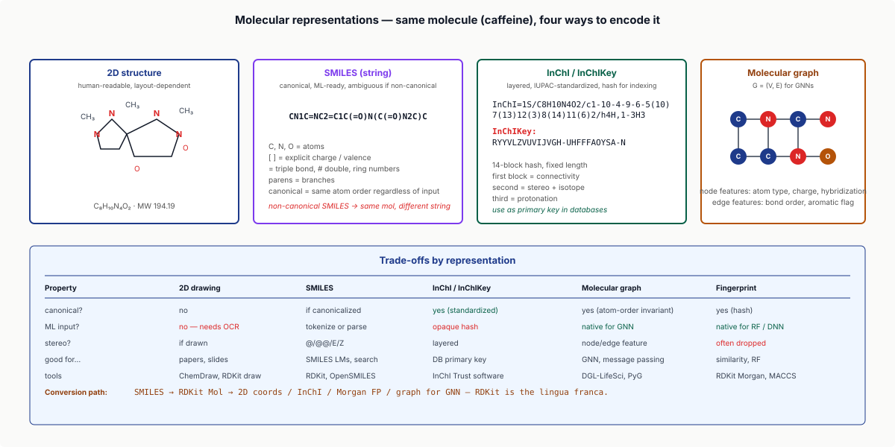
2.4 RDKit basics
RDKit is the open-source standard. Python interface: from rdkit import Chem.
mol = Chem.MolFromSmiles("CC(=O)Oc1ccccc1C(=O)O") # aspirin
mol.GetNumAtoms() # 13
mol.GetMolWt() # 180.16
mol.GetNumHeavyAtoms() # 13
mol.GetNumRotatableBonds() # 3Common operations:
- Compute descriptors (MW, logP, TPSA, H-bond donors/acceptors, rotatable bonds).
- Generate 3D coordinates (UFF, MMFF94 force fields).
- Compute fingerprints (Morgan, MACCS).
- Substructure search.
Industry default for chemoinformatics; ~50% of pharma chemoinformatics teams use RDKit.
2.5 Property descriptors
Standard properties computable from SMILES:
- MW: molecular weight.
- logP: octanol-water partition coefficient (lipophilicity).
- TPSA: topological polar surface area (membrane permeability proxy).
- HBD / HBA: hydrogen-bond donor / acceptor count.
- Rotatable bonds: flexibility.
These descriptors feed all downstream filtering and ML.
2.6 The deep dive
Part 3 · 30 min Fingerprints and Similarity
3.1 What's a fingerprint
A molecular fingerprint is a fixed-length binary or count vector encoding the presence/absence of structural features:
- Length 1024-2048 bits (typical).
- Each bit corresponds to a specific substructure or environment.
- Fast to compute and compare.
Two main families: substructure-based (MACCS) and circular (ECFP / Morgan).
3.2 MACCS fingerprints
MACCS (Molecular ACCess System): 166 hand-curated structural keys (e.g., "has aromatic ring", "has nitrogen attached to oxygen").
Pros: interpretable, compact, predictable. Cons: limited to 166 features; misses subtle distinctions. Used as a quick first-pass.
3.3 Morgan / ECFP fingerprints
Morgan fingerprints / ECFP (Extended Connectivity Fingerprint, Rogers & Hahn 2010): the modern default.
- Each atom gets an initial identifier (e.g., based on element, charge, valence).
- For each iteration $r$ (radius), the atom's identifier is updated based on identifiers of its neighbours within $r$ bonds.
- After radius 2-3 iterations, hash all unique atom-environment identifiers into a bitset.
ECFP4 (radius 2, ~typical) and ECFP6 (radius 3) capture larger neighbourhoods. Morgan/ECFP fingerprints encode local environments — invariant to molecular ordering, sensitive to substructures.
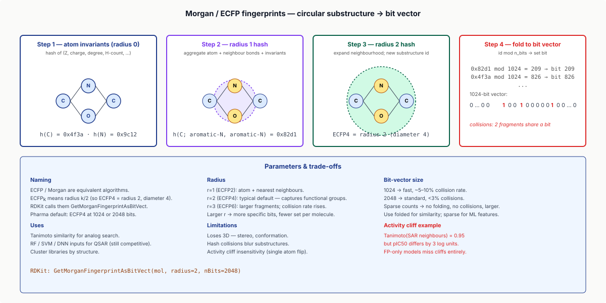
3.4 Tanimoto similarity
The standard fingerprint-similarity metric:
$$T(A, B) = \frac{|A \cap B|}{|A \cup B|}$$
$A$ and $B$ are bit vectors; intersection = bits both have set; union = bits either has set.
- $T = 1$: identical fingerprints (likely identical molecules).
- $T \geq 0.85$: very similar.
- $T \geq 0.6$: same chemical series.
- $T \approx 0.3$: random.
Used for: clustering compound libraries, identifying similar molecules to a known active, filtering library duplicates, hit-list expansion.
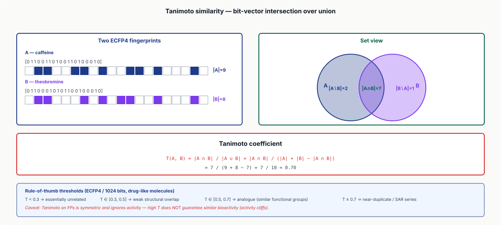
3.5 Pharmacophore fingerprints
Beyond chemical structure: encode pharmacophores — abstract features (H-bond donor, H-bond acceptor, aromatic, hydrophobic) at specific 3D distances.
Used when the question is "do these molecules share a binding mode?" rather than "do they share atoms?". Tools: RDKit pharmacophores, LigandScout.
3.6 The deep dive
Part 4 · 40 min Virtual Screening and Docking
4.1 The virtual screening problem
You have:
- A target protein (with a known binding pocket).
- A library of $\sim 10^6$ candidate molecules.
Goal: rank molecules by predicted binding affinity → enrich the top few thousand → buy / synthesise / test.
4.2 Receptor preparation
Target structure (from X-ray, cryo-EM, AlphaFold) prepared for docking:
- Add hydrogens (most PDB structures lack them).
- Assign charges (Gasteiger or AMBER).
- Identify binding pocket (manual annotation, blind docking, or pocket-finding tools like fpocket).
- Define a "search space" — a 3D box around the pocket.
Output: a "receptor" file ready for docking.
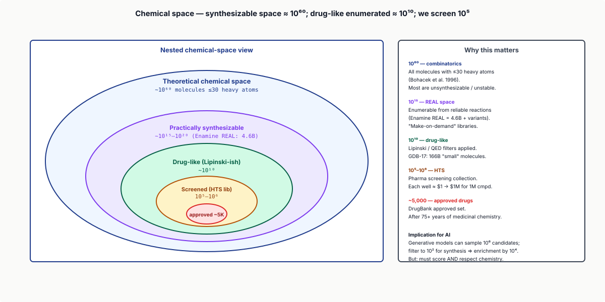
4.3 Docking algorithms
AutoDock Vina (Trott & Olson 2010): the most-used open-source docker.
- Pose generation: enumerate ligand conformations and orientations within the search box.
- Pose scoring: empirical scoring function (combines van der Waals, hydrogen bonds, electrostatics, hydrophobic effects).
- Best pose returned with score (predicted ΔG of binding, kcal/mol).
Modern variants: AutoDock GPU (GPU-accelerated), DiffDock (Corso 2022, generative diffusion model for pose prediction), RoseTTAFold All-Atom (Krishna 2023, joint protein-ligand structure prediction).
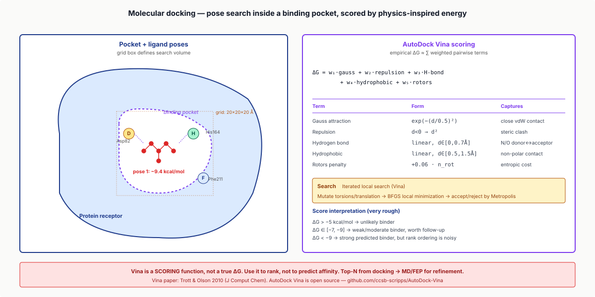
4.4 Scoring functions
Empirical scoring functions: Vina score (6-term physics-based), Glide SP / XP (commercial; often more accurate), GBSA / PBSA (free-energy calculations; slower, more accurate), MM-GBSA (post-docking rescoring).
Modern ML-based: GNINA (CNN-rescored Vina), DiffDock + scoring (end-to-end deep model).
For typical workflows: dock with Vina; rescore top 1,000 with GNINA or MM-GBSA.
4.5 Enrichment and ROC
How well does a virtual screen distinguish actives from decoys?
Enrichment factor EF$_x$: the fold-enrichment of actives in the top $x$% of ranked hits, vs random ordering.
- EF$_{1\%}$ = 5: top 1% of ranked compounds is 5× more enriched in actives than random.
- EF$_{1\%}$ = 50: enormous enrichment (rare).
ROC curve: actives recall vs false-positive rate; AUC summarises overall discrimination.
For typical virtual screens against well-characterised targets: AUC = 0.7-0.85; EF$_{1\%}$ = 5-30. Significantly better than random; well below perfect.
4.6 Practical workflow
A typical Vina virtual screen:
- Library: 10⁶ ZINC compounds.
- Vina dock each (~10 sec/compound on GPU; ~1 hour/compound on CPU). Total: ~3 days on a cluster.
- Rank by predicted ΔG.
- Inspect top 100 manually (visual chemical sense).
- Filter for druggability (Lipinski, ADMET).
- Order top 50; experimentally test.
Hit rate from virtual screen: typically 5-15% of ordered compounds show measurable activity.
Part 5 · 25 min ADMET and Druglikeness
5.1 The ADMET concept
A drug must reach its target at sufficient concentration and not cause harm. Five properties:
- Absorption: oral bioavailability.
- Distribution: tissue distribution; blood-brain-barrier (BBB) for CNS drugs.
- Metabolism: hepatic clearance (CYP450 enzymes).
- Excretion: renal clearance, half-life.
- Toxicity: hepatotoxicity, cardiotoxicity (hERG), genotoxicity.
A potent compound that fails ADMET → useless. Most drug-discovery failures are ADMET-related.
5.2 Lipinski's Rule of Five
Lipinski's empirical rules for oral bioavailability:
- MW ≤ 500.
- logP ≤ 5.
- HBD ≤ 5.
- HBA ≤ 10.
Compounds violating ≥ 2 rules are "less likely" to be orally bioavailable. Not a strict filter — many drugs violate (~10% of approved drugs violate ≥ 2). But useful for triage.
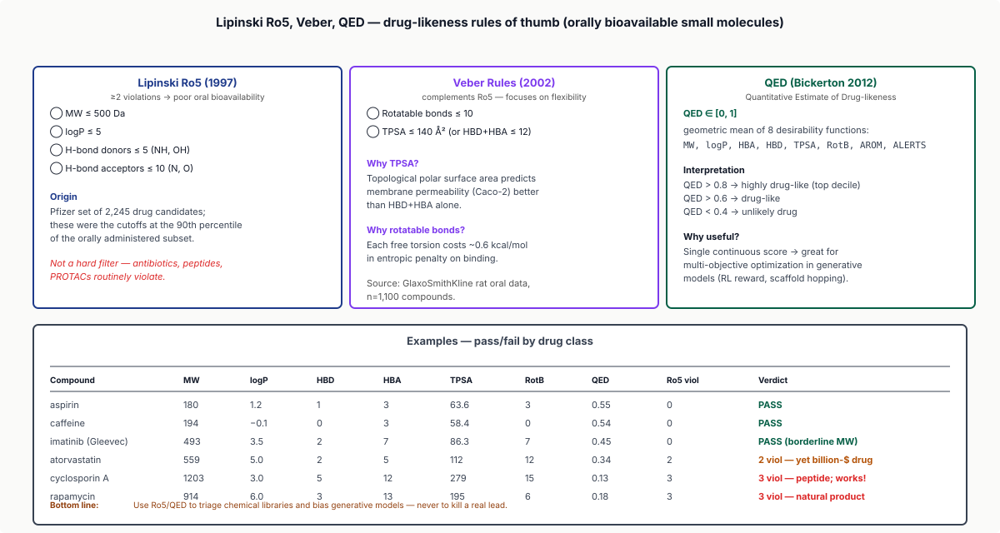
5.3 QED (Quantitative Estimate of Druglikeness)
QED (Bickerton 2012): a single-number druglikeness score combining 8 properties (MW, logP, HBD/HBA, PSA, rotatable bonds, aromatic rings, alerts).
QED ranges 0-1; ~0.6+ is drug-like. Used for filtering large libraries.
5.4 Toxicity prediction
Specific toxicity flags:
- PAINS (Pan-Assay Interference Compounds): structural alerts for promiscuous false-positives.
- hERG: predicts cardiac potassium channel blockade → arrhythmia risk.
- AMES: predicts mutagenicity.
- Hepatotoxicity: predicts liver damage.
Tools: RDKit's PAINS filter, ToxCast, Tox21 ML models, modern deep-learning predictors.
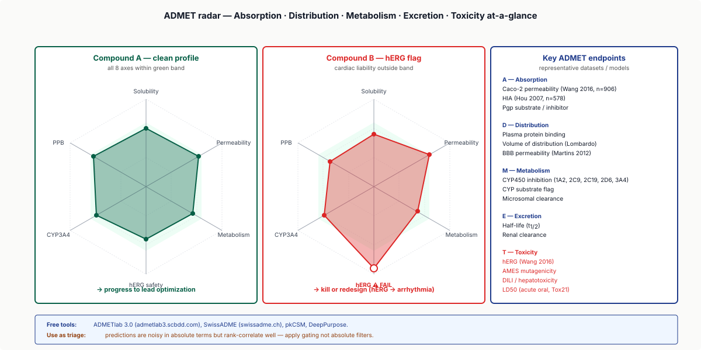
5.5 ADMET ML models
Modern ADMET prediction is increasingly ML-driven:
- Chemprop (Yang 2019): GNN-based predictor; trained on public ADMET data; often outperforms traditional QSAR.
- ADMETlab 2.0: web service running ML predictors for ~50 ADMET endpoints.
- AlphaFold-driven: predict drug binding to off-target proteins (CYP450, transporters).
The 2024 frontier: foundation models for chemistry (ChemBERTa, MolBERT, MoLFormer) pre-trained on ~10⁶ molecules; multi-task ADMET predicting 50 properties jointly; uncertainty-aware models.
Part 6 · 25 min Deep Learning for Drug Discovery
6.1 GNNs for property prediction
Chemprop and D-MPNN (Yang 2019): graph neural networks for molecular property prediction.
- Input: molecular graph (atoms + bonds with features).
- Message passing: each atom updates based on neighbours.
- Readout: graph-level prediction (scalar property).
Trained on labelled data (e.g., known IC50s for 100k compounds against a target). Predicts properties for new molecules.
For typical drug-discovery workflows: train Chemprop on internal SAR data; predict for new compounds; rank for synthesis priority.
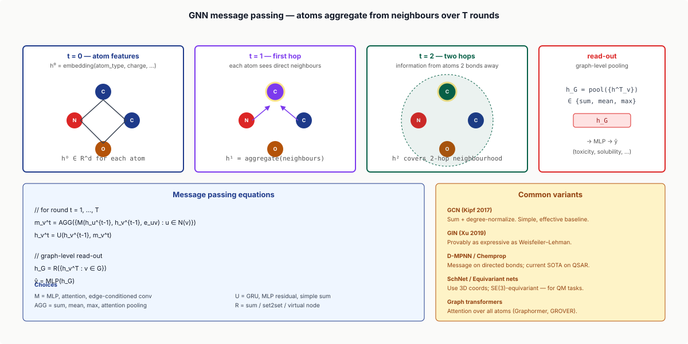
6.2 Generative models for de novo design
Beyond predicting properties: generate new molecules that satisfy desired properties.
- REINVENT (Olivecrona 2017, Loeffler 2024): RL-based; trains a recurrent neural net to generate SMILES that maximise a reward (predicted potency, druglikeness, novelty).
- MolDiff (Li 2023): diffusion model on molecular graphs.
- Pocket2Mol (Peng 2022): pocket-conditioned molecule generation — given a binding pocket, design molecules that fit.
These tools generate ~10⁵-10⁶ new molecules per run; chemists triage by druglikeness + synthetic accessibility.
6.3 Deep learning + structure
AlphaFold-driven design:
- AlphaFold predicts target structure.
- Pocket detection identifies druggable sites.
- Generative model conditioned on pocket geometry produces fitting molecules.
- Docking validates predicted poses.
This pipeline (Insilico Medicine's INS018_055, BenevolentAI's drug candidates) is producing IND-stage candidates.
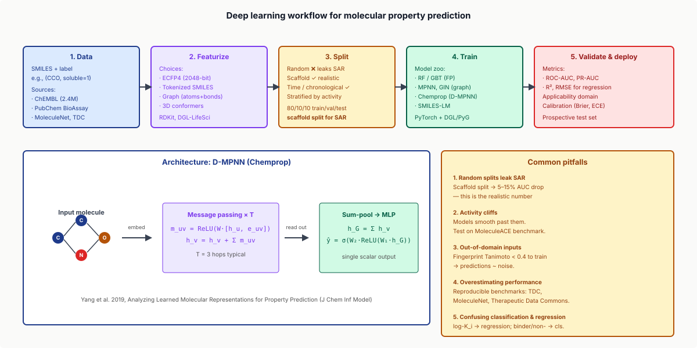
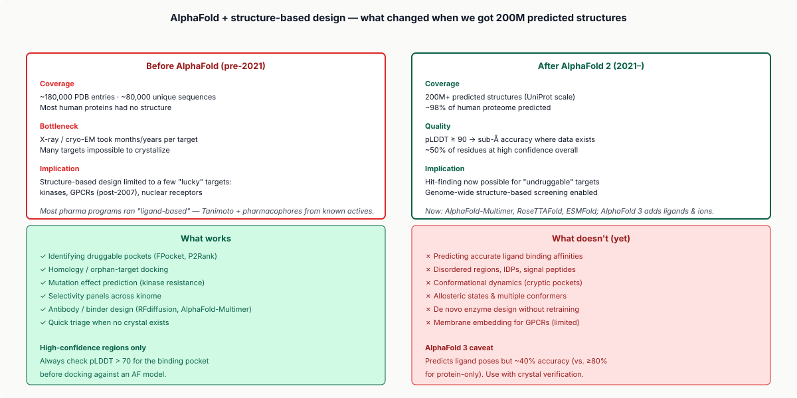
6.4 Hit expansion via DL
Given a known active, design analogues that:
- Maintain target binding.
- Improve ADMET.
- Avoid patent space.
Iterative refinement loops: generate → predict properties → rank → select → repeat. Modern pharma teams use this routinely.
The 2024 frontier: active learning loops (ML model selects next compounds to test, balancing exploration and exploitation), quantum chemistry surrogates (ML approximations to expensive DFT calculations), allosteric site discovery (AlphaFold-based identification of cryptic binding pockets).
Part 7 · 20 min From Hit to Drug
7.1 Hit-to-lead
A "hit" has measurable activity (~μM IC50). A "lead" has:
- Sub-μM IC50.
- Selectivity (10×-100× over off-targets).
- Reasonable ADMET.
- Synthetic accessibility.
Hit-to-lead activities: SAR (structure-activity relationship) studies, ADMET screening, counter-screening for selectivity. Output: ~5-10 "lead" compounds entering optimisation.
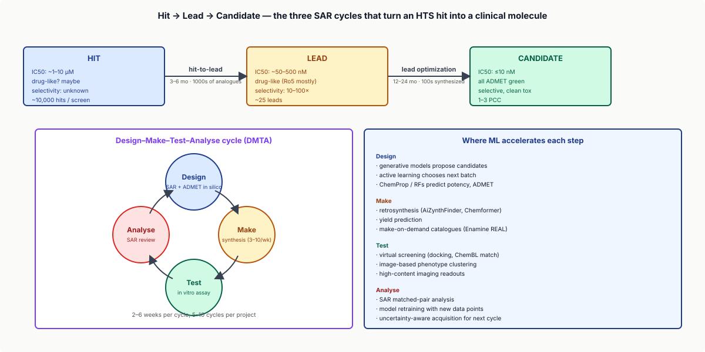
7.2 Lead optimisation
Iterative medicinal chemistry on each lead:
- Improve potency 10-100×.
- Improve ADMET.
- Address known liabilities (toxicity flags, low oral bioavailability).
- Patent considerations.
Tools: free-energy perturbation calculations (FEP+), GNN-based property prediction, structure-based design. Output: 1-3 "development candidates" per program.
7.3 Pre-clinical
In vivo studies before human trials:
- Pharmacokinetics: drug levels in animals over time.
- Toxicology: dose-response in animals (rodents + non-human primates).
- Efficacy: animal models of disease.
Output: an IND (Investigational New Drug) filing with the FDA → clinical trials.
7.4 Clinical trials
- Phase 1 (~30-100 patients): safety + dose-finding.
- Phase 2 (~100-300): efficacy in target indication.
- Phase 3 (~1000-5000): pivotal efficacy + safety.
Each phase ~2-4 years. Attrition: 90% of Phase 1 doesn't reach approval.
7.5 Recent successes from computational pipelines
- Sotorasib (KRAS G12C inhibitor): structure-driven design; AlphaFold-era selectivity.
- Casgevy / exa-cel (sickle cell gene therapy): MAVE-validated.
- Insilico's INS018_055: AlphaFold + generative DL → IND-enabling, fastest computational-to-clinic timeline.
- Deucravacitinib (Bristol Myers Squibb): structure-based selectivity for TYK2 over JAK family.
Wrap-up
What you should take away
- Drug discovery is constrained optimisation in chemical space: maximise potency, minimise off-target, respect ADMET. Classical heuristics + modern ML.
- Molecular representations: SMILES (storage), molecular graphs (working), fingerprints (ML features). RDKit is the open-source standard.
- Fingerprints + Tanimoto: locality-sensitive hashing of molecular graphs; the workhorse of similarity search.
- Virtual screening with docking: enriches hit candidates ~10× over random; AutoDock Vina is the open-source standard.
- ADMET predictions (Lipinski, QED, ML-based): filter library before synthesis; most drug-discovery failures are ADMET-related.
- Deep learning (GNNs for properties, generative models for design) is rapidly transforming the field; AlphaFold-driven pipelines are producing IND candidates faster than ever.
- EE framings: chemical space as discrete optimisation; fingerprints as LSH; docking as constrained energy minimisation; drug discovery as multi-objective optimisation under constraints.
Next lecture
Imaging-omics and pathology AI. The DL methods you saw here (GNNs, generative models, foundation models) connect to broader genomic and imaging ML.
Homework
- Use RDKit to compute MW, logP, TPSA, HBD/HBA for 10 molecules of your choice. Apply Lipinski + QED; tabulate which pass.
- From a SMILES list of 100 known drugs, compute pairwise Morgan fingerprints + Tanimoto similarity. Cluster into ~10 chemical series; report representative drugs per cluster.
- Run AutoDock Vina on a kinase target (e.g., ABL1 1IEP) against 100 ZINC molecules. Report top 10 by predicted ΔG. Manually inspect best pose; comment on plausibility.
- Train a simple Chemprop GNN on a public dataset (BACE, BBBP). Report test R² or AUC. Identify two molecules where predictions are wildly wrong; discuss potential reasons.
- For one drug development candidate of your choice, summarise the pre-clinical profile (PK, tox, animal efficacy) → IND filing → Phase 1 data. Identify the most challenging optimisation step.
Recommended reading
- Daylight Chemical Information Systems. SMILES specification (online).
- Rogers, D., & Hahn, M. (2010). Extended-connectivity fingerprints. Journal of Chemical Information and Modeling 50, 742–754.
- Trott, O., & Olson, A. J. (2010). AutoDock Vina: improving the speed and accuracy of docking. Journal of Computational Chemistry 31, 455–461.
- Lipinski, C. A., et al. (1997). Experimental and computational approaches to estimate solubility and permeability in drug discovery and development settings. Advanced Drug Delivery Reviews 23, 3–25.
- Bickerton, G. R., et al. (2012). Quantifying the chemical beauty of drugs. Nature Chemistry 4, 90–98.
- Yang, K., et al. (2019). Analyzing learned molecular representations for property prediction. Journal of Chemical Information and Modeling 59, 3370–3388.
- Olivecrona, M., et al. (2017). Molecular de-novo design through deep reinforcement learning. Journal of Cheminformatics 9, 48.
- Corso, G., et al. (2022). DiffDock: diffusion steps, twists, and turns for molecular docking. arXiv:2210.01776.
- RDKit: rdkit.org
- AutoDock Vina: vina.scripps.edu
- Chemprop: chemprop.readthedocs.io
- ZINC database: zinc20.docking.org
- ChEMBL: ebi.ac.uk/chembl
Appendix — timing summary
| Block | Time | Cumulative |
|---|---|---|
| Part 1 — Drug Discovery Landscape | 25 min | 0:25 |
| Part 2 — Molecular Representations | 30 min | 0:55 |
| Part 3 — Fingerprints and Similarity | 30 min | 1:25 |
| Part 4 — Virtual Screening and Docking | 40 min | 2:05 |
| Part 5 — ADMET and Druglikeness | 25 min | 2:30 |
| Part 6 — Deep Learning for Drug Discovery | 25 min | 2:55 |
| Part 7 — From Hit to Drug | 20 min | 3:15 |
| Wrap-up | 10 min | 3:25 |
Total: ~3h 25min of content.